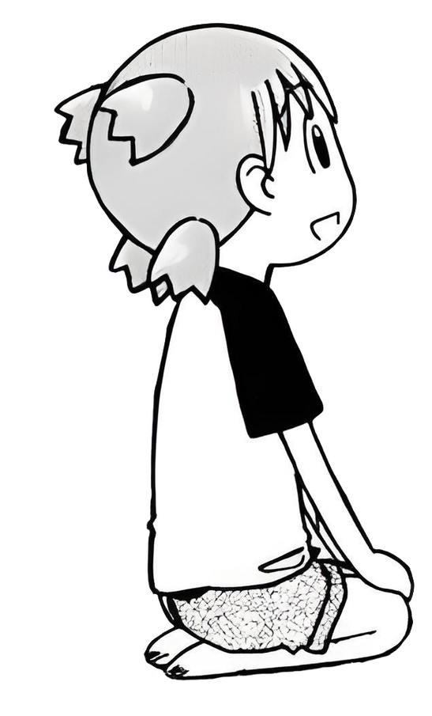
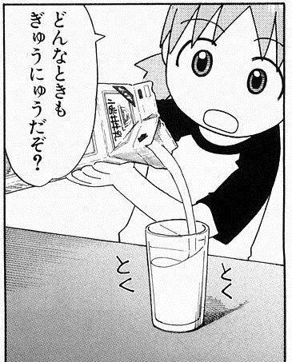

3.Sentence-Ending ぞ/ ぜ
- ぞ is another sentence-ending particle. Its main use is to express something like a strong will, or to forcefully state your opinion.

- Women generally only use it when talking to themselves, and you might hear phrases like these 頑張るぞ(the way you might say "let's go!” to yourself before getting down to some work)

- It's not used in polite speech and can come off very strongly. ぜ basically means the same thing but sounds a bit less harsh.
- Examples:
殺すぞ (I'm going to kill you)
そのビールうまいぜ (that beer is delicious)
@kallisto-no-planetarium